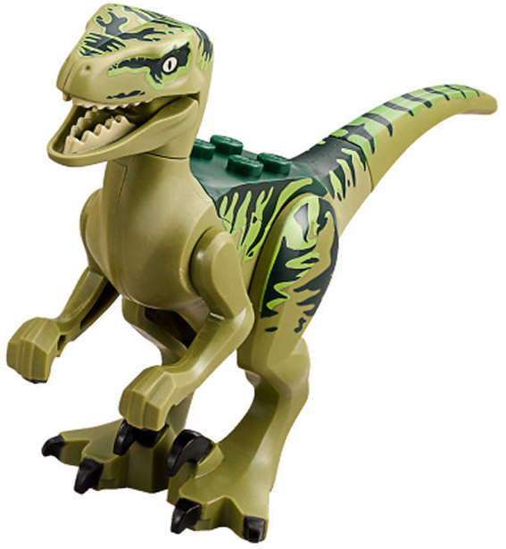

Le Velociraptor était un genre de petit dinosaure bipède carnivore à plumes qui a vécu à la fin du crétacé, entre 80 et 70 millions d’années avant notre ère. Son nom signifie «voleur agile». Le dinosaure Velociraptor se distingue des autres dromaeosauridés par sa tête très étroite et aplatie. En revanche, le volume de son cerveau est relativement important proportionnellement à sa taille. Le velociraptor possédait de puissantes mâchoires portant environ 80 dents acérées. Il mesurait, de la tête à la queue, environ 1,80 mètre pour une hauteur de 1,20 mètre et un poids qui avoisinait les 15 kilogrammes. La morphologie du vélociraptor laisse à penser qu’il possédait une excellente vitesse de course, pouvant atteindre 60 km/h, et qu’il disposait de la vision tridimensionnelle. 